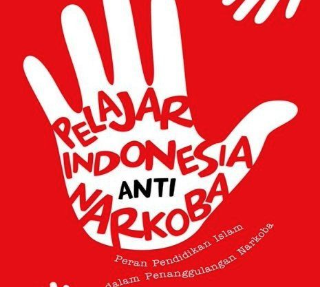

BAHAYANE NARKOBA
Dibuat oleh: RESTI MUKTI RAHAYU
Tanggal: 2 Desember 2025

Bahaya Narkoba
Ing sawijining desa pinggiran kutha, ana bocah sekolah
menengah jenenge Ardi. Dheweke dikenal alus budi, pinter
sinau, lan dadi pangarep-arep wong tuwane. Saben dina
Ardi mesthi lunga sekolah nganggo sepeda ontel lan mesthi
pas wektune.
Nanging, suwene-suwene Ardi miwiti ngganti kebiasaane.
Dheweke kerep bali sore banget lan sok-sok ora mlebu
sekolah. Wong tuwane wiwit kuwatir, nanging Ardi mung
ngomong, “Aku mung kumpul karo kanca-kanca, Bu, Pak.”
Salah sawijining dina, guru BK nemokake Ardi turu ing kelas
kanthi mripat abang dan awak ringkih. Guru banjur ngajak
Ardi ngomong. Sawise dipepet pitakonan, pungkasane
Ardi ngakoni yen dheweke diceluk kanca-kancane kanggo
nyoba narkoba kanthi alesan supaya luwih semangat lan ora gampang kesel.
Saka pisan nyoba, Ardi banjur kecandhu. Dhuwite entek
kanggo tuku barang mau, nilai sekolahé ambruk, lan awake
saya ringkih. Nalika wong tuwanku ngerti, dheweke sedhih
nanging tetep ngupaya nulungi.
Ardi banjur digawa menyang panti rehabilitasi kanggo
nambani kecandhune. Ing kana Ardi sadar yen narkoba ora
tau nggawa kabecikan. Mung rasa seneng sedhela, nanging
akibaté ngrampas masa depan lan ngrusak awak lan pikiran.
Sawise pirang-pirang wulan ing rehab, Ardi bali menyang
omah lan sekolah. Dheweke netepi janjine untuk ora nate
nyentuh narkoba maneh. Ardi malah dadi juru kampanye
anti-narkoba ing sekolahé.
Beri Komentar